캡처 원본: artifacts/feedback70/tone_audit/ (feedback_capture fresh+late, 1280·1600, 약 400장). 심각도 상 = 첫인상을 바로 아동용으로 끌어내림, 중 = 반복 노출로 싸 보임, 하 = 다듬기. 유지 = 이미 톤에 맞음.
화면
문제 (왜 어려 보이나)
심각도
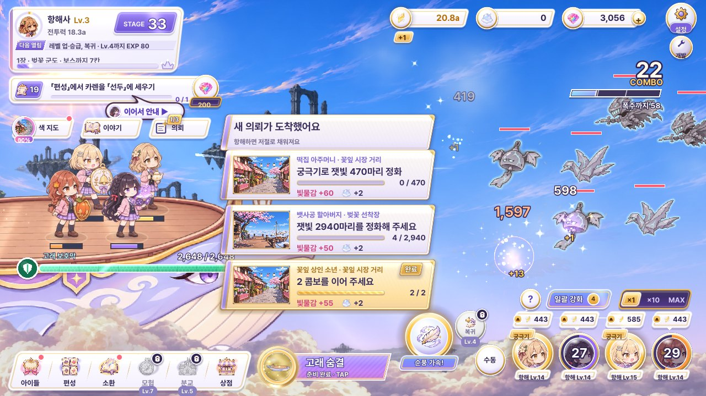
전투 HUD
모든 부품이 흰 크림 알약(좌상 카드·의뢰 줄·재화 칩·탭 3개·하단 탭) — 같은 무게의 둥근 흰 판이 10개 이상 떠 있어 「아동 학습앱」 인상. 위계 없음.
하단 탭 아이콘이 스티커식 굵은 외곽선 + 채도 높은 평면색, 잠금 표시는 둥근 회색 자물쇠 배지.
궁극기 동그라미 = 두꺼운 금 고리 + 파스텔 내부 + 아래 리본 꼬리표 → 장난감 메달. 「순풍 가속!」 「궁극기」 리본 꼬리표 과다.
COMBO 숫자: 굵은 흰 글자 + 검은 외곽선 (만화 효과음 느낌).
상
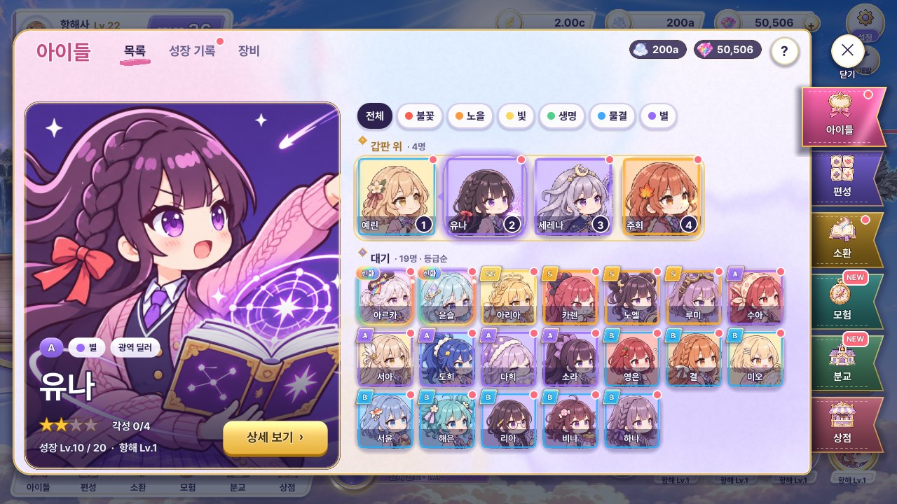
아이들 목록
속성 필터 = 색 점 + 흰 알약 6개, 등급 배지가 사탕색 사각(SS 노랑/S 주황/A 보라/B 하늘) + 빨간 점 남발.
「상세 보기」 = 젤리 같은 노랑 둥근 버튼.
오른쪽 세로 깃발 탭이 원색(분홍·남·황·청록·초록) 깃발 → 색 소음. 핑크 형광펜 밑줄 탭.
상
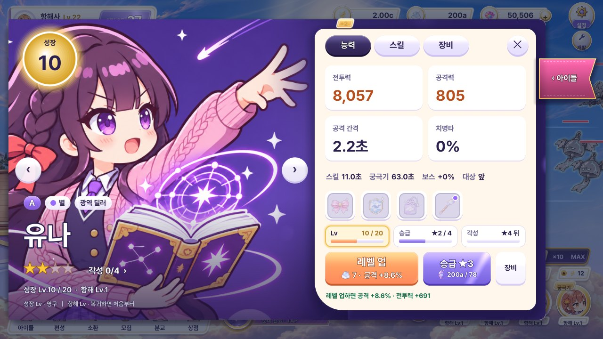
아이 상세
오른쪽 판이 큰 둥근 모서리(약 36px) 크림 카드, 스탯 카드도 둥근 흰 블록 → 모바일 웹 앱 같음.
「레벨 업」 주황 그라데이션 + 「승급」 보라 젤리 버튼 둘이 경쟁.
좌상 성장 메달: 두꺼운 금 원 + 큰 숫자 = 장난감 훈장.
중
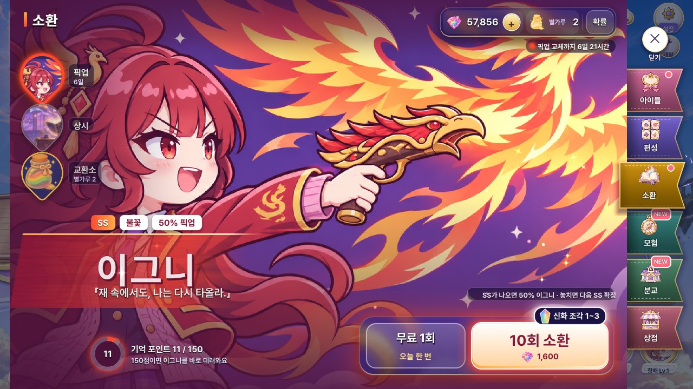
소환
배너 목록이 물방울(핀) 모양 액자 + 교환소가 무지개 가루 자루 → 장난감.
「10회 소환」 크림·주황 둥근 버튼, 「무료 1회」 보라 둥근 버튼. 신화 조각 딱지 알약.
캐릭터 그림·이름 띠·대사 서체는 유지.
중
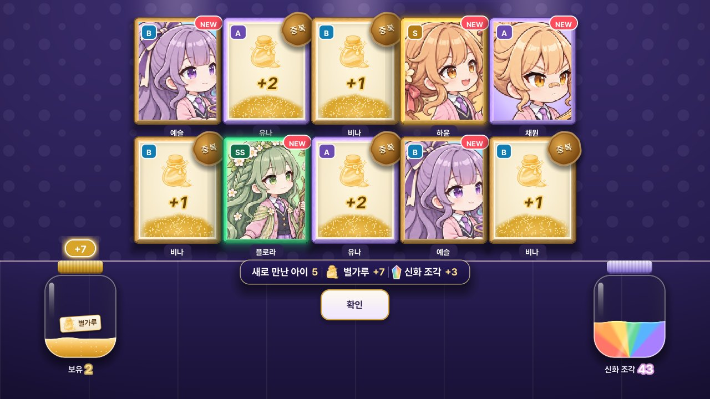
10회 결과
별가루 = 노란 항아리/주머니 + 금가루 더미, 중복 = 갈색 쿠키 같은 원형 도장.
아래 통(tub) 두 개: 둥근 유리 단지 + 무지개 반원 → 장난감 저금통. 숫자 「43」 버블 서체.
바탕 물방울 점무늬 = 유아용 벽지.
상
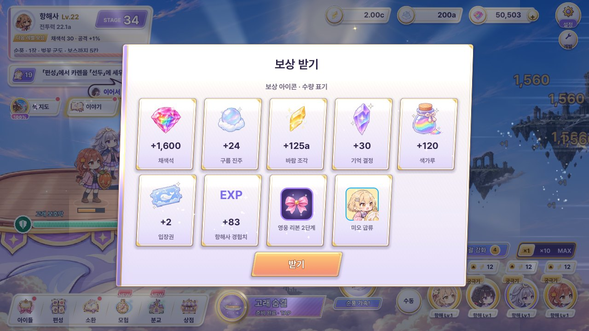
보상 받기
흰 카드 9장 + 주황 젤리 「받기」. 빛살은 있지만 판이 평평한 흰 종이라 무게감 없음.
아이콘 조명 방향·외곽선이 제각각(구름 진주=물방울 만화, 색가루=무지개 단지).
중
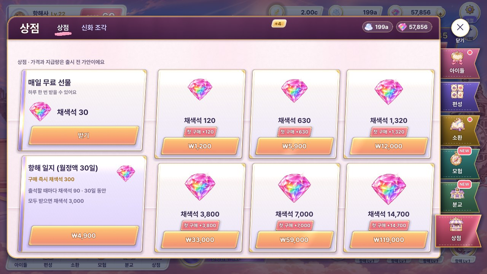
상점
같은 보석 6개를 크기만 바꿔 반복, 주황 젤리 가격 버튼 8개, 빨간 「첫 구매」 알약 → 마트 전단.
와인색 머리띠 + 분홍 판 + 주황 버튼 = 색 비율 붕괴.
상
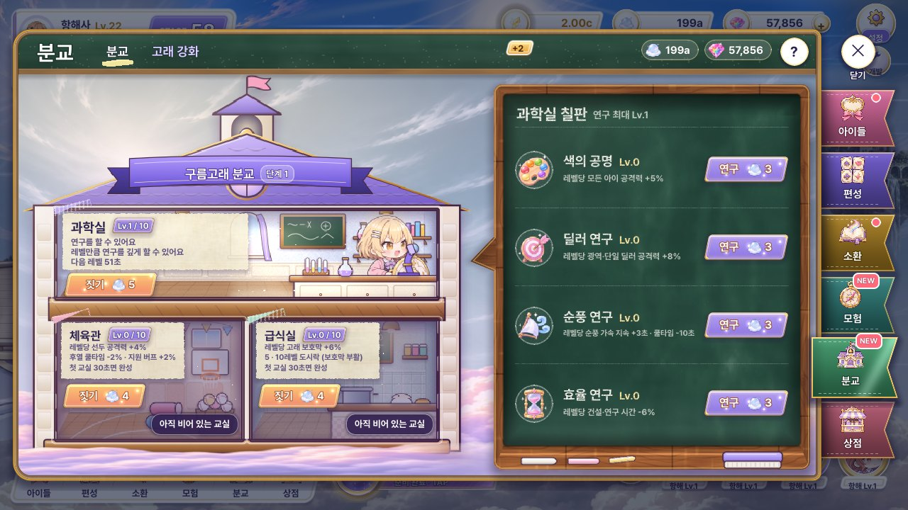
분교
칠판·나무 액자·인형집 단면 = 세계관은 좋으나 굵은 갈색 테·초록 칠판·주황 「짓기」 알약이 겹쳐 무거움.
연구 아이콘이 원형 크림 배지 속 만화 아이콘.
중
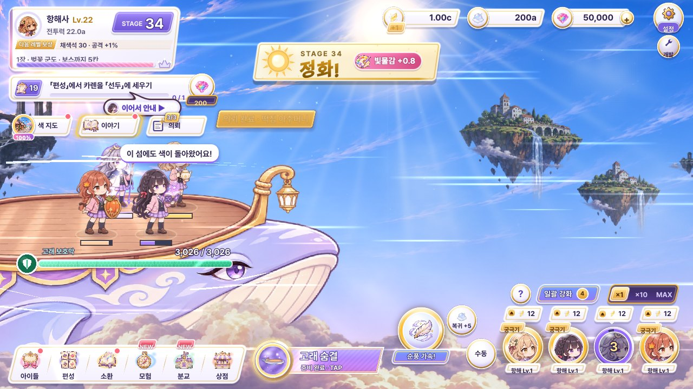
스테이지 정화
만화 해 아이콘 + 크림 판 + 「정화!」 굵은 글자 → 스티커. 빛살은 좋음(유지).
중
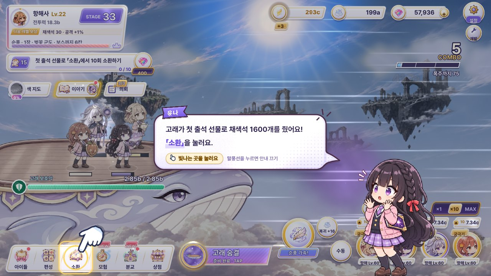
안내 말풍선
말풍선은 꼬리가 뾰족해 좋음(유지). 손가락 커서 = 만화 장갑, 「빛나는 곳을 눌러요」 노랑 알약은 유아어.
하
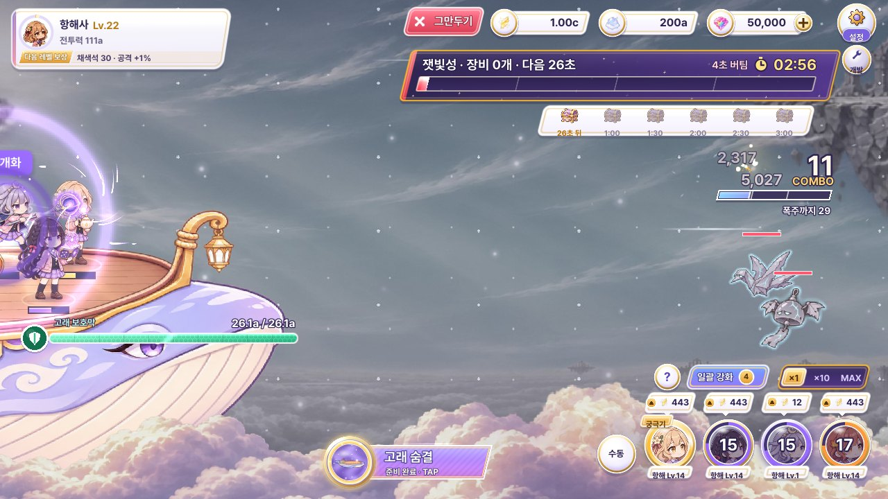
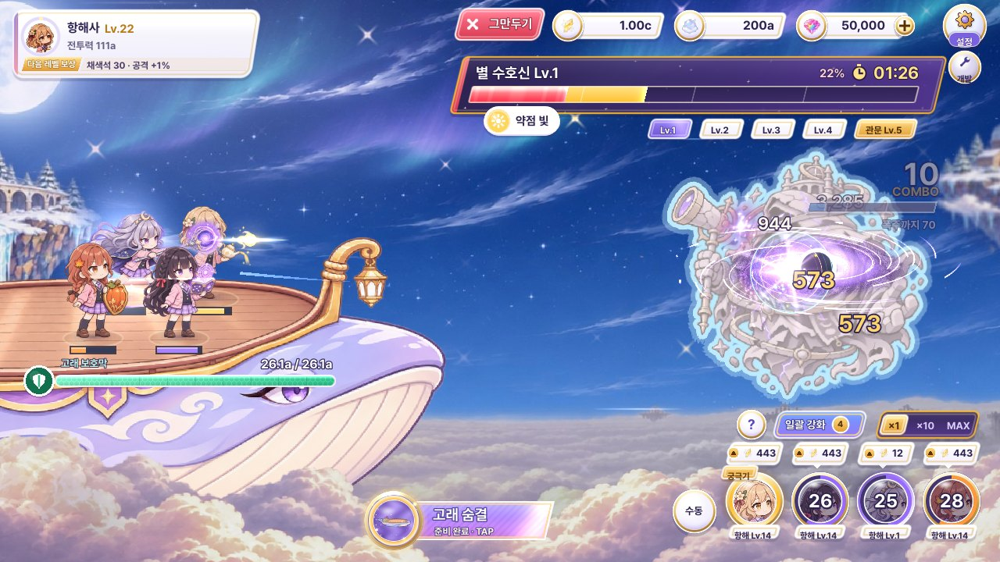
모험 전투 (잿빛성 · 속성 수호신)
빨간 젤리 「그만두기」 알약 + 흰 둥근 재화 알약 3개 + 금색 원형 「설정·개발」 메달 = 장난감 버튼 줄.
보스 막대는 남색 판·금테로 결이 맞음(유지), 아래 Lv 알약 5개(흰·노랑)와 「약점 빛」 흰 알약은 사탕색.
궁극기 = 두꺼운 원형 메달 + 버블 숫자, 위에 흰 알약 「443」 4개 → 가장 아동용으로 보이는 묶음. 데미지 숫자 노란 외곽선 버블.
상
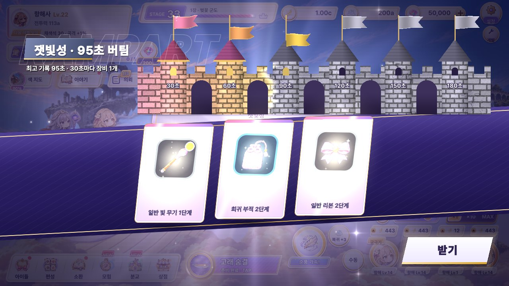
모험 보상 (잿빛성)
분홍·주황·노랑 깃발을 꽂은 장난감 성 일러스트가 진행도 = 놀이공원 간판. 큰 「RAMPART」 외곽 글자.
기운 남색 띠·흰 카드 3장 구조는 좋음. 카드 위 분홍 그라데이션 머리띠와 둥근 아이콘 액자는 사탕색.
중
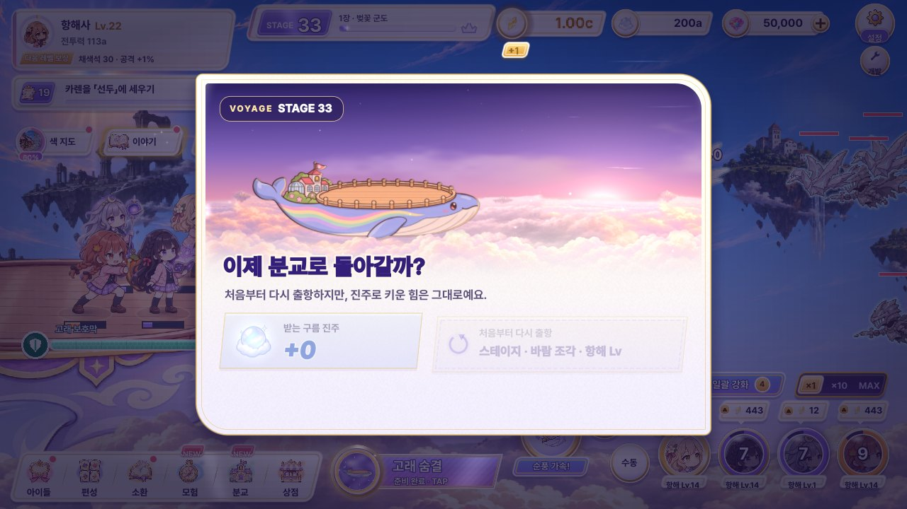
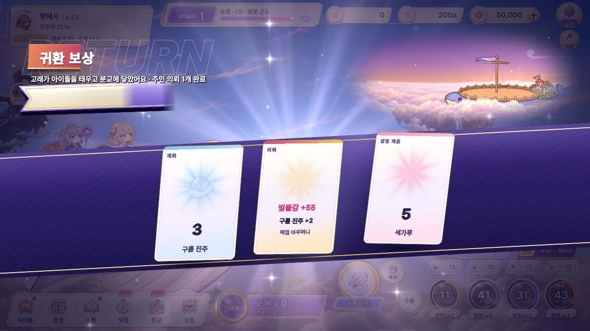
복귀 묻기 · 귀환 보상
복귀 창: 모서리 약 30px 흰 둥근 카드 + 두꺼운 크림 테, 제목 Black 굵기, 「+0」 파랑 기울임 버블 숫자.
귀환 보상: 빛살·기운 띠는 좋음(유지). 카드 위 원색 머리띠(하늘·주황·분홍), 「귀환 보상」 주황→분홍 리본 + 빈 진행 막대(크림→보라)가 미완성처럼 보임.
캡처 시점에 아이콘이 아직 퍼지는 빛(별 모양)이라 내용이 안 보임 → 연출 없이도 아이콘이 보이게(정지 상태 확인 필요).
중
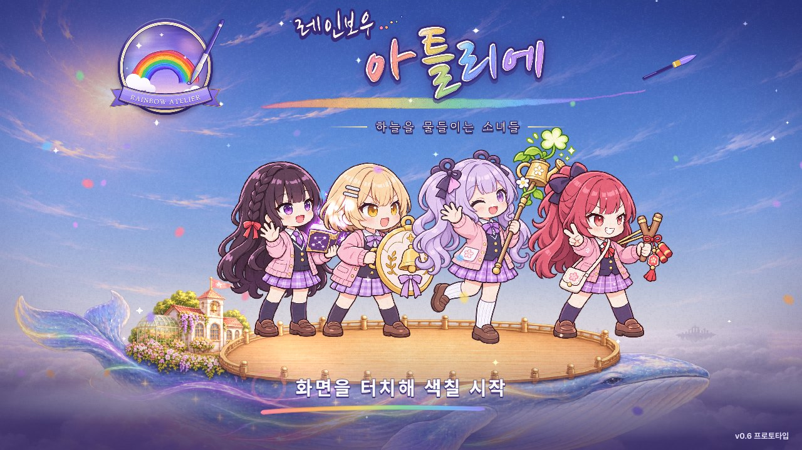
타이틀
기운 판·금선·빛 훑기 — 승인된 기준 화면. 이 결을 전 화면으로 넓히는 것이 이번 제안의 뼈대.
유지
움직임: UiSoft.juice가 누를 때 0.95 → 놓을 때 1.03 → TRANS_BACK으로 튕김 = 젤리 반동(전 버튼 공통) 중. 탭 바꿀 때 판이 x 0.25→1로 늘어나는 것도 고무줄 느낌. 유지: 빛 훑기(Sheen), 컷인, 소환 연출, 캐릭터 SD 그림 전부.
이 밖의 화면(편성·모험 6쪽·고래·장비·각성·레벨 업/귀환·이야기·설정·시스템 창·토스트)도 같은 부품을 쓰므로 같은 5가지 문제가 반복된다: ① 흰 둥근 알약 ② 젤리 주황/노랑 버튼 ③ 사탕색 등급/알림 배지 ④ 장난감 사물 아이콘(단지·자루·항아리·쿠키 도장) ⑤ 튕기는 반동.
1. 디자인 체계 — 토큰
두 갈래:
색 비율 (UI 면적 기준 · 캐릭터 그림 제외) A 유리·금선
라벤더 유리 34 · 남색 그늘 26 · 크림 시트 28 · 금 10 · 장미 2 B 종이·수채
크림 종이 52 · 라벤더 수채 24 · 남색 글자·주 버튼 12 · 금 10 · 장미 2. 주황·노랑 버튼 색 폐지.
팔레트
채도는 지금보다 15~25% 낮춘다. 원색 속성색은 1px 테·점에만.
글자 (한글) 고운바탕 28 — 이름·제목 Pretendard Bold 20 — 판 제목 Pretendard Medium 15 — 본문 15 — 보조·라벨 (게임 1280 기준 최소, 13 미만 금지) 숫자 = Pretendard tabular, 외곽선 없음, 그림자 1px. 둥근 버블 서체·검은 외곽선 글자 폐지.
모서리
4 버튼·배지 / 6 판·칩 / 10 시트. 원(⌀)은 아바타·재화 머리에만. 지금 18~36px → 4~10px. 기울기 −8°는 주 버튼·제목 판에만.
선1px 금 헤어라인(끝은 반드시 투명으로 사라짐 — 잘린 끝 금지), 판 안쪽 1px 테. 2px 이상 테·검은 외곽선 금지. 모서리 장식은 짧은 L자 금선.
재질 A 유리: blur 14 · 남색 78~86% · 위 1px 하이라이트. B 종이: 크림 + 결 노이즈 5% + 수채 번짐 1곳(판당 ≤1). 공통 에나멜(주 버튼): 위 밝음→아래 어둠 3단 + 아래 1px 빛줄. 브러시드 메탈: 금 테에만.
그림자·높이
e1 칩·버튼 / e2 판·팝업. 넓고 옅게(남색 18%). 스티커식 아래로 밀린 진한 그림자 금지.
움직임 누름: scale 0.97, 90ms ease-out → 놓음 1.0, 160ms cubic(.2,.8,.2,1). 넘침(1.03)·BACK 튕김 금지. 등장: 12px 미끄러짐 + 페이드 220ms. 탭: 금 밑줄이 옆으로 180ms 이동. 보상·소환만 큰 연출 허용.
효과 절제 한 화면에 상시 움직이는 효과 ≤2 (빛 훑기 6초마다 1번, 빛가루 1층). 반짝이는 4각별은 아이콘당 ≤1. 빨간 점은 행동 가능할 때만.
2. 부품 시트
버튼 · 탭 · 칩 · 배지 (전투 바탕 위)
10회 소환 1,600레벨 업승급 ★3잠김 · Lv.757,856+2
목록성장 기록장비신화SSSAB● 별
판 · 카드 · 토스트 · 말풍선
과학실 칠판
레벨당 모든 아이 공격력 +5%
연구 최대 Lv.1
SS이그니
A유나
보상을 받았어요 · 채색석 +30
유나고래가 첫 출석 선물로 채색석 1,600개를 줬어요. 「소환」을 눌러요.
+3
+7
3. 아이콘 — 장난감 대신 아틀리에 도구
별가루 (새) 코르크·금띠 유리 약병 속 금가루신화 조각 (새) 빛을 세 갈래로 쪼개는 프리즘 파편채색석구름 진주바람 조각기억 결정색의 공명(연구)어두운 바탕 · 28/40px
규칙: 빛은 왼쪽 위 하나, 외곽선 대신 밝은 1px 테두리, 3~4개 면으로 층을 나눔, 반짝이 4각별 ≤1, 바닥 그림자 타원 옅게. 항아리·자루·저금통·통(tub)·쿠키 도장 폐지 → 약병·물감 튜브·팔레트·붓·프리즘.
4. 화면 6종 — 지금 ↔ 새 디자인 (같은 구조)
① 전투 HUD (1280 / 1600)
지금
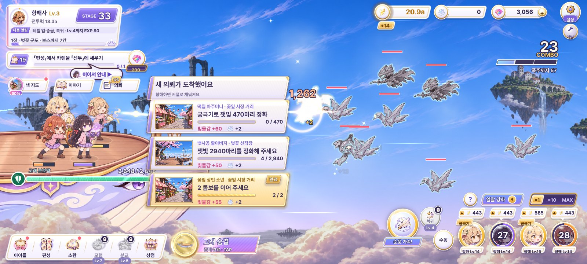
새 디자인
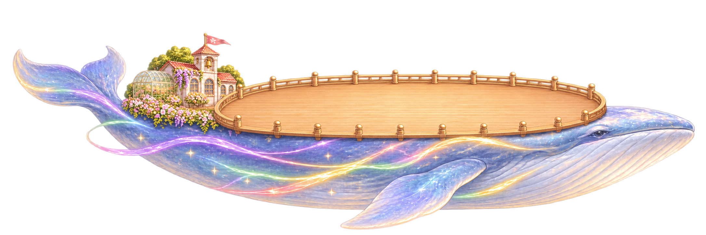
항해사 Lv.3
전투력 18.3a
STAGE
33
다음 레벨 업·승급·복귀EXP 80
19「편성」에서 카렌을 「선두」에 세우기0/1200
색 지도
이야기
의뢰 1/3
20.8a
0
3,056+
설정
22
COMBO · 폭주까지 58
아이들
편성
소환
모험
Lv.7
분교
Lv.5
상점
고래 숨결준비 완료 · TAP
일괄 강화 4×1 · ×10 · MAX
Lv.14
27초
27
궁극기
29초
29
흰 알약 → 라벤더빛 유리 판(위계: 프로필만 금 모서리). 궁극기 메달 → 세로 초상 카드(준비=금테, 대기=어둡게+숫자). 콤보 숫자 외곽선 제거, 고운바탕. 일괄 강화는 궁극기 카드 위 줄로, 잠긴 탭은 해금 레벨을 둘째 줄로.
라벤더: 모든 판·칩 유리, 게이지 시작색크림: 안내 말풍선(전투 중엔 최소)금: 헤어라인·숨결 버튼·준비된 궁극기 테
② 아이들 목록 · 상세
지금
새 디자인 — 목록
아이들목록성장 기록장비
200a
50,506
A● 별광역 딜러
★★☆☆ 각성 0/4 · 성장 Lv.10/20
유나
상세 보기
전체불꽃노을빛생명물결별
갑판 위 · 4명
SS아리아 · 1
A유나 · 2
S세레나 · 3
S카렌 · 4
대기 · 19명 · 등급순
신화아르카
SS이그니
SS플로라
S루미
S녹스
A솔
A마린
B미오
속성 필터는 알약 대신 글자 탭 + 금 밑줄, 이름·등급은 초상 안에 15px. 큰 초상은 배지 → 별 → 이름 순으로 왼쪽에 쌓고 「상세 보기」와 겹치지 않게 분리.
라벤더: 큰 판 유리·초상 바탕·S 배지크림: 목록에는 쓰지 않음 (선택 후 상세 스탯 시트)금: 탭 밑줄·묶음 제목·SS 테·상세 보기
지금 — 상세
새 디자인 — 상세
GROWTH
10
A● 별광역 딜러
유나
★★☆☆ 각성 0/4 · 성장 Lv.10/20 · 항해 Lv.1
능력스킬장비✕ 닫기
전투력
8,057
공격력
805
공격 간격
2.2초
치명타
0%
스킬11.0초 · 궁극기 63.0초보스피해 +0% · 공격 대상 앞
Lv 10/20
승급 ★2/4
각성 ★4 뒤
레벨 업진주 7 · 공격 +8.6%승급 ★3200a / 78장비
레벨 업하면 공격 +8.6% · 전투력 +691
36px 둥근 크림 카드 → 금 모서리 유리 판. 스탯은 판 안의 크림 시트(라벨 15px, 값 21~32px), 스킬 줄은 「항목 | 값」 두 줄로 나눠 한 줄 13px 압축을 없앰. 주 버튼 하나만 금 에나멜.
라벤더: 오른쪽 판 유리·바탕 번짐·승급 게이지크림: 스탯 시트금: 모서리 L선·전투력 숫자·레벨 업
③ 소환 + 10회 뒤 재화 그릇 (1280 / 1600)
지금
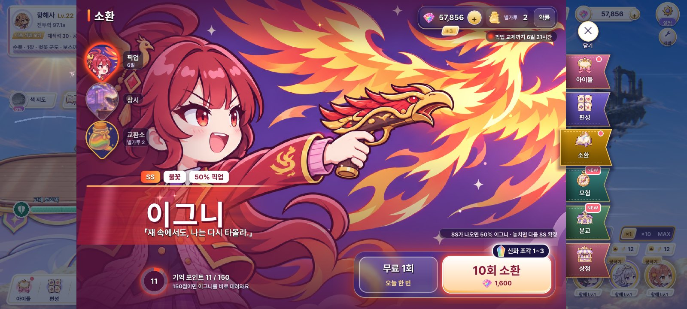
새 디자인
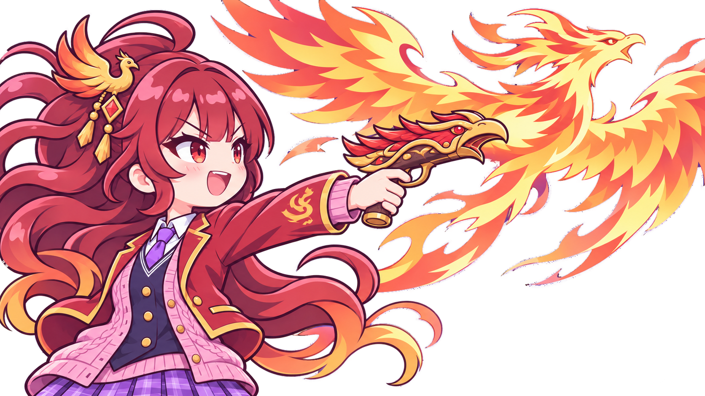
소환
픽업
6일 남음
상시
항상 열림
교환소
별가루 2
57,8562확률
픽업 교체까지 6일 21시간
SS● 불꽃50% 픽업
이그니
「재 속에서도, 나는 다시 타올라.」
11
기억 포인트 11 / 150
150점이면 이그니를 바로 데려와요
10회 소환마다 신화 조각 1~3
SS가 나오면 50% 이그니 · 놓치면 다음 SS 확정
무료 1회오늘 한 번10회 소환1,600
물방울 핀 배너 → 유리 카드(200×70, 이름 17px·남은 기간 15px), 자루 → 약병. 천장·소환 규칙은 판에 담아 그림 위에서도 15px로 읽힘. 이름 띠 양 끝은 투명으로 사라짐. 금 에나멜은 10회 소환 하나.
라벤더: 배너 카드·재화 판·천장 판 유리크림: 「무료 1회」 보조 버튼 글자·이름 띠 대사 (B는 판 전체)금: 선택 배너 테·천장 링·10회 소환
지금 — 10회 결과 재화 통
새 디자인 — 결과 재화 그릇 (#21 흡수)
새로 만난 아이 5별가루 +7신화 조각 +3
확인
+7
별가루 9
+3
신화 조각 43/ 60
별가루9 +7
20개면 기억 결정 1개
신화 조각43 +3
60개면 신화 아이 교환
단지·통 → 실제 아이콘(약병·프리즘)을 그릇으로 그대로 크게. 중복 = 쿠키 도장 대신 오른쪽 위 금 테 「중복」 꼬리표(15px) + 약병 아이콘. 점무늬 바탕 → 라벤더 번짐 + 사선 결. 카드 이름·꼬리표·요약 모두 15px 이상.
라벤더: 바탕 번짐·카드 바탕·신화 조각 수치크림: 결과 요약 띠금: 헤어라인·중복 꼬리표·별가루 수치·SS 테
④ 보상 팝업 (빛살 포함)
지금
새 디자인
REWARD
보상 받기
받기
평평한 흰 카드 → 금 테 크림 시트 카드 + 아이콘 아래 은은한 등급빛, 수량은 고운바탕 숫자, 이름 15px. 빛살은 끝이 사라지는 원뿔(세로 기둥 없음). 버튼 금 에나멜 하나.
라벤더: 뒤 가림막 번짐·빛살 중심크림: 보상 카드 전부금: 카드 테·제목 헤어라인·받기
⑤ 스테이지 정화 (#33 흡수)
지금
새 디자인
STAGE 34
정화
이 섬에도 색이 돌아왔어요
빛물감 +0.8
STAGE 34
정화
빛물감 +0.8
이 섬에도 색이 돌아왔어요!
만화 해 + 크림 스티커 → 끝이 사라지는 띠 + 금선 두 줄(a), 또는 금 인장(b). 빛살은 유지하되 가늘게.
라벤더: 정화 띠·인장 (B는 크림 띠)크림: 유나 말풍선금: 띠 위아래 헤어라인·STAGE 글자
⑥ 메뉴 판 — 상점
지금
새 디자인
상점상점신화 조각
199a
57,856
가격과 지급량은 출시 전 가안이에요
매일 무료 선물
하루 한 번 받을 수 있어요
채색석 30
받기
항해 일지 월정액 30일
구매 즉시 채색석 300
출석할 때마다 채색석 90 · 30일 동안 모두 받으면 채색석 3,000
₩4,900
주황 젤리 8개 → 가격은 남색 에나멜(크림 시트 위), 「첫 구매」 빨간 알약 → 금 헤어라인 꼬리표(15px). 보석은 크기 대신 아래 받침 빛 세기로 단계 표현.
라벤더: 바깥 판 유리·재화 칩크림: 상품 시트 8장금: 탭 밑줄·첫 구매 꼬리표·월정액 버튼
5. test1_visual 흡수 · 적용 범위
test1_visual(#21 재화 그릇 · #22 별가루/신화 아이콘 · #33 정화 UI): 작업 시점에 design/mockups/feedback70/test1_visual/ 폴더가 아직 없어 내용을 읽지 못했다. 이 페이지의 ③ 그릇 a/b, 3장 아이콘, ⑤ 정화 a/b가 같은 세 항목을 이 체계로 다룬다. 충돌 시 이 체계가 우선: 항아리·자루·통 모양 금지, 굵은 외곽선 금지, 모서리 ≤10px, 금선 끝은 사라짐.
전 화면 적용 공수 (추정)
1단계 · 공용 부품 (2~3일): UiSoft(plate/button/card/juice/tag/pips), HudSkin(soft_button/plate/tag), GradeStyle 배지 색 — 모서리·재질·색·누름 반동만 바꾸면 메뉴 대부분이 따라온다. 셰이더 판 색 상수 교체.
2단계 · 아이콘 (3~4일): 재화 6종 + 하단 탭 6 + 연구·장비 아이콘 약 30개를 같은 조명 규칙으로 다시 그림(SVG → PNG 임포트). 별가루·신화 조각 그릇 교체(gacha_show).
3단계 · 화면별 손질 (4~6일): 전투 HUD(궁극기 카드·콤보 숫자), 소환 배너 목록, 10회 결과, 보상 팝업, 정화 띠, 상점·분교 머리띠 색, 오른쪽 깃발 탭 색 통일, 안내 손가락 커서.
4단계 · 검증 (1~2일): feedback_capture 전체 다시 찍고 1280/1600 비교, 글자 ≥13px·터치 ≥44px 확인.
합계 약 10~15 작업일(UI 1인). 게임 로직·수치·세이브 변경 없음. A/B 중 하나를 고르면 1단계 상수만 달라진다.